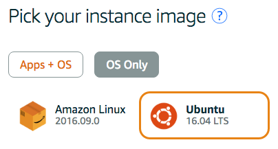

- open AWS Lightsail
- Log in
First, log in to Lightsail. If you don't already have an Amazon Web Services account, you'll be prompted to create one.
- Create an instance
Once you're logged in, Lightsail will give you a friendly message with a robot on it, prompting you to create an instance. A Lightsail instance is a Linux server running on a virtual machine inside an Amazon datacenter.

- Choose an instance image: Ubuntu
Lightsail supports a lot of different instance types. An instance image is a particular software setup, including an operating system and optionally built-in applications.
For this project, you'll want a plain Ubuntu Linux image. There are two settings to make here. First, choose "OS Only" (rather than "Apps + OS"). Second, choose Ubuntu as the operating system.

- Choose your instance plan
The instance plan controls how powerful of a server you get. It also controls how much money they want to charge you. For this project, the lowest tier of instance is just fine. And as long as you complete the project within a month and shut your instance down, the price will be zero.

- Give your instance a hostname
- Every instance needs a unique hostname. You can use any name you like, as long as it doesn't have spaces or unusual characters in it. Your instance's name will be visible to you and to the project reviewer.

- Wait for it to start up
It may take a few minutes for your instance to start up.

- Running
Once your instance has started up, you can log into it with SSH from your browser.
The public IP address of the instance is displayed along with its name. In the above picture it's 54.84.49.254.
Note: When you set up OAuth for your application, you will need a DNS name that refers to your instance's IP address. You can use the xip.io service to get one; this is a public service offered for free by Basecamp. For instance, the DNS name 54.84.49.254.xip.io refers to the server above.

- On the top right corner, click the Account
- Select SSH keys and click Create New

- Download the private key which have .pem extension
- On the local machine, move this private key to ~/.ssh with the new name udacity_key.rsa
cp ~/Downloads/lightsail_private_key.pem ~/.ssh/udacity_key.rsa
ls ~/.ssh
- Change the permission of udacity_key.rsa to prevent any users are able to modify it
chmod 600 ~/.ssh/udacity_key.rsa
ls -la ~/.ssh/udacity_key.rsa
- Testing the connection from Local Machine to AWS lightsaile
ssh -i ~/.ssh/udacity_key.rsa ubuntu@34.219.190.194
You will receive the warning "Are you sure you want to continue connecting(yes/no)?" Answer "Yes"
If you recieve this error warning Permission Denied (publickey)
Please follow the Step 3 to finish the configuration
STEP 3: Update UBUNTU security, change port, configure UFW (Connect to SSH on the virtual server AWS Lightsail)
Secure ubuntu server
- sudo apt-get update
- sudo apt-get upgrade
- sudo apt autoremove
- sudo apt-get install finger
Auto update the package
- sudo dpkg-reconfigure --priority=low unattended-upgrades
- Edit sshd_config file
- sudo nano /etc/ssh/sshd_config change port 22 to 2200 to prevent attacks on the default port

- restart ssh
sudo service ssh restart
- Configure the Uncomplicated Firewall (UFW) to allow only the incoming connection for SSH (port 2200), HTTP (port 80), and NTP (port 123)
sudo ufw status
sudo ufw default deny incoming
sudo ufw default allow outgoing
sudo ufw allow ssh
sudo ufw allow 2200/tcp
sudo ufw allow 80/tcp
sudo ufw allow 123/udp
sudo ufw deny 22
sudo ufw enable
sudo ufw status
- Back AWS lightsail => Networking tab
add more rule on the firewall

Note:From the local machine (terminal), execute ssh -i ~/.ssh/udacity_key.rsa -p 2200 ubuntu@34.221.39.98 where 34.221.39.98 is the IP address of the instance
Note:when you run ssh -i ~/.ssh/udacity_key.rsa -p 2200 ubuntu@34.221.39.98, please make sure to include -p 2200 to it. It took me two days to figure out what I missed
STEP 4: Prevent hacker to attack your network. Use Fail2Ban
Fail2Ban is protected computer servers from brute-force attakcs
- Install Fail2Ban
sudo apt-get install fail2ban
- Install sendmail for email notice
sudo apt-get install sendmail iptables-persistent
- Copy of the file
sudo cp /etc/fail2ban/jail.conf /etc/fail2ban/jail.local
- modify the jail.local file
- Restart the service
sudo service fail2ban restart
STEP 4.1: Configure the automatically software update
- Enabled automatic security update by unattended-upgrades
sudo apt-get install unattended-upgrades
- Modify the unattended-upgrades
sudo nano /etc/apt/apt.conf.d/50unattended-upgrades
- uncomment the line:
"${distro_id}:${distro_codename}-updates";
- Modify auto-grade as follow
- sudo nano /etc/apt/apt.conf.d/20auto-upgrades

- Enabled the unattended-upgrades
sudo dpkg-reconfigure --priority=low unattended-upgrades
- Restart Apache
STEP 4.2: Update Most Recent
Follow these command to update the most recent
- sudo apt-get update
- sudo apt-get dist-upgrade
- sudo shutdown -r now
Disconnect from host and logged back in

STEP 5: Create grader username
- Under ubuntu logged in
- Add new "grader" username
- sudo adduser grader

Provide grader access permission
- Modify the visudo
-
- Search for this info:
- Add grader below root
- grader ALL=(ALL:ALL) ALL

- Check to make grader has the correct access permission
STEP 6: Using ssh-keygen to create SSH key pair
- On terminal (Local machine)
- run ssh-keygen
- Ask to save new filename as /home/ownername/grader_udacity_key. It store at ls ~/.ssh
- Two new filename created (grader_udacity_key and grader_udacity_key.pub)
- Copy grader_udacity_key.pub
- cat ~/.ssh/grader_udacity_key.pub
- Connect to virtual server (AWS lightsail)
- Connect to the host (virtual server AWS lightsail)
- Create .ssh new directory
- Paste the grader_udacity_key at local machine to virtual server
- sudo nano ~/.ssh/authorized_keys

- copy the content and paste to the authorize_key
- cat ~/.ssh/authorized_keys
- Prevent user change permssion
- sudo chmod 700 .ssh
- sudo chmod 644 .ssh/authorized_keys
- Restart Service
- Back to the local machine (terminal)
- excecute
- ssh -i ~/.ssh/grader_udacity_key -p 2200 grader@34.221.39.98

step 7: Configure UTC local time zone
- Log in as
grader
- Time Zone configuration
- sudo dpkg-reconfigure tzdata

step 8: apache installation and configuration
- Login as
grader
- Apache installation command
- sudo apt-get install apache2
- Testing Apache after installation, open the browser and paste the AWS lightsail public IP address
http://34.221.39.98/

- Install mod_wsgi package for python3
- sudo apt-get install libapache2-mod-wsgi-py3
- Should be
mod_wsgi enabled
- sudo a2enmod wsgi

step 9: PostgreSQL installation and configuration
- Still log in as
grader
- PostgreSQL installation
- sudo apt-get install postgresql
- Switch to
Postgres
- use the command
psql to open PostgreSQL terminal
- Create
catalog role and allow user to create the database

- Quit the current PostgreSQL terminal
\q
- Back to the
grade terminal exit
- Create
catalog as we did for the grader
- sudo adduser catalog
-

- Run
sudo visudo and add catalog ALL=(ALL:ALL) ALL as image below
- Verify catalog permission as image below

- Log in as
catalog and follow step below

step 10: Git Instalation
- Log in as
grader